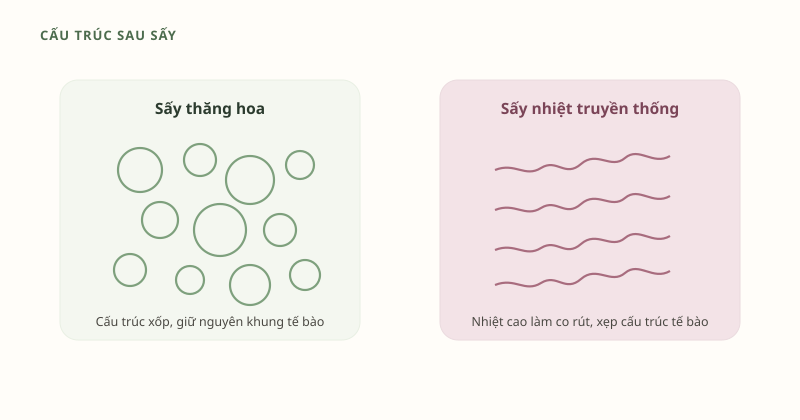

Nếu để ý kỹ bao bì các loại trái cây, thảo mộc sấy khô cao cấp gần đây, bạn sẽ thấy cụm từ "sấy thăng hoa" (freeze-dried) xuất hiện ngày càng nhiều — thay cho "sấy khô" thông thường. Đây không phải là một chiêu marketing đơn thuần. Đó là một công nghệ chế biến thực phẩm có nguyên lý vật lý rõ ràng, đã được nghiên cứu và ứng dụng công nghiệp từ nhiều thập kỷ. Bài viết này giải thích ngắn gọn, dễ hiểu về công nghệ này — và vì sao nó phù hợp đặc biệt với những nguyên liệu giàu chất xơ, dễ nhạy cảm với nhiệt như quả sung và cỏ sữa lá lớn.
Sấy thăng hoa là gì?
Sấy thăng hoa (freeze-drying, hay lyophilization) là phương pháp loại bỏ nước ra khỏi thực phẩm bằng hiện tượng thăng hoa: nước ở thể rắn (đá) chuyển thẳng sang thể hơi mà không đi qua thể lỏng. Theo tổng quan đăng trên tạp chí Applied Sciences (MDPI, 2024) về tác động của sấy thăng hoa lên thực phẩm, quy trình này gồm ba giai đoạn chính:
- Đông lạnh sâu — nguyên liệu (quả sung, cỏ sữa lá lớn) được làm lạnh nhanh xuống khoảng -35°C đến -45°C để nước bên trong kết tinh thành đá nhỏ, đều.
- Sấy sơ cấp (thăng hoa) — nguyên liệu đã đông lạnh được đưa vào buồng chân không. Ở áp suất rất thấp, các tinh thể đá thăng hoa trực tiếp thành hơi nước mà không tan chảy trước.
- Sấy thứ cấp — nhiệt độ được nâng nhẹ để loại bỏ nốt lượng ẩm còn sót lại liên kết chặt trong cấu trúc.
Kết quả: có thể loại bỏ tới 95–99,5% lượng nước trong nguyên liệu mà hầu như không cần dùng đến nhiệt độ cao ở giai đoạn quan trọng nhất — khác hẳn với sấy nhiệt hay phơi nắng truyền thống.[1]

Sấy thăng hoa khác gì so với phơi nắng và sấy nhiệt thông thường?
Cách sấy truyền thống (phơi nắng, sấy bằng lò nhiệt/luồng khí nóng) làm nước bốc hơi ở nhiệt độ cao hơn nhiều — thường trong khoảng 40–90°C hoặc phụ thuộc hoàn toàn vào nắng tự nhiên, không kiểm soát được. Nhiệt độ cao và thời gian tiếp xúc với oxy kéo dài khiến nhiều hợp chất nhạy nhiệt bị phân huỷ, đồng thời làm mô thực vật co rút, xẹp cấu trúc tế bào.
| Tiêu chí | Sấy thăng hoa | Sấy nhiệt / phơi nắng truyền thống |
|---|---|---|
| Nhiệt độ xử lý chính | Rất thấp, dưới điểm đông (giai đoạn thăng hoa diễn ra khi nguyên liệu vẫn ở thể đông lạnh) | Khoảng 40–90°C hoặc theo nhiệt độ môi trường, khó kiểm soát |
| Cấu trúc sau sấy | Xốp, giữ khung tế bào gần với nguyên bản | Co rút, cứng, xẹp cấu trúc |
| Hợp chất nhạy nhiệt (polyphenol, vitamin...) | Được ghi nhận giữ lại tốt hơn đáng kể | Suy giảm nhiều hơn do tiếp xúc nhiệt kéo dài |
| Thời gian chế biến | Dài hơn (nhiều giờ đến vài ngày) | Thường nhanh hơn |
| Chi phí năng lượng | Cao hơn | Thấp hơn |
Tổng quan trên Applied Sciences dẫn ví dụ với dâu tằm trắng: mẫu sấy thăng hoa giữ được hàm lượng phenolic tổng và khả năng chống oxy hoá cao nhất trong các phương pháp được so sánh, trong khi mẫu sấy nhiệt cho kết quả kém hơn rõ rệt.[1] Đây là lý do nhiều dòng thực phẩm chức năng, trái cây sấy cao cấp chuyển sang dùng công nghệ này dù chi phí cao hơn.
ℹ️ Lưu ý minh bạch
Con số cụ thể về tỷ lệ dưỡng chất được giữ lại phụ thuộc vào từng loại nguyên liệu, điều kiện sấy và thiết bị — các nghiên cứu trên là dữ liệu khoa học chung về đặc tính công nghệ sấy thăng hoa, không phải số liệu đo riêng cho sản phẩm của FigMyHealth.
Vì sao điều này quan trọng với quả sung và cỏ sữa lá lớn?
Quả sung và cỏ sữa lá lớn đều là những nguyên liệu giàu chất xơ và hợp chất polyphenol — nhóm hoạt chất được ghi nhận khá nhạy cảm với nhiệt độ cao và thời gian chế biến kéo dài.[2] Khi phơi nắng trực tiếp nhiều ngày liền (cách làm phổ biến ở một số cơ sở thủ công nhỏ lẻ), nguyên liệu vừa tiếp xúc UV, vừa tiếp xúc nhiệt và bụi môi trường trong thời gian dài — điều mà quy trình sấy thăng hoa trong buồng kín, nhiệt độ thấp giúp hạn chế đáng kể.
Đó cũng là lý do FigMyHealth lựa chọn sấy thăng hoa toàn bộ mẻ nguyên liệu quả sung và cỏ sữa lá lớn, thay vì phơi nắng hay sấy nhiệt thông thường — dù chi phí và thời gian sản xuất cao hơn đáng kể.
Bột Quả Sung & Cỏ Sữa Lá Lớn — sấy thăng hoa nguyên mẻ
Không đường, không chất bảo quản, không pha trộn tinh bột độn. Xem giá và đặt hàng ngay hôm nay.
Xem giá & đặt hàng Hỏi thêm qua ZaloCâu hỏi thường gặp
Sấy thăng hoa có làm mất chất xơ không? Chất xơ là thành phần cấu trúc tương đối bền với nhiệt độ thấp, nên về nguyên tắc quy trình này ít tác động đến chất xơ hơn so với sấy ở nhiệt độ cao kéo dài — dù vậy mức độ cụ thể còn tùy nguyên liệu và cần được kiểm nghiệm riêng cho từng sản phẩm.
Sản phẩm sấy thăng hoa có cần bảo quản lạnh không? Không nhất thiết — vì đã loại bỏ phần lớn độ ẩm, sản phẩm khá bền ở nhiệt độ phòng nếu đóng gói kín, tránh ẩm và ánh nắng trực tiếp. Luôn kiểm tra hướng dẫn bảo quản in trên bao bì cụ thể.
Nguồn tham khảo khoa học
- "The Impact of Freeze Drying on Bioactivity and Physical Properties of Food Products." Applied Sciences, MDPI (2024). Xem bài báo
- Alzahrani, B. et al. (2024). "Recent insight on nutritional value, active phytochemicals, and health-enhancing characteristics of fig (Ficus carica)." Food Safety and Health, Wiley. Xem bài báo
Đây là tài liệu khoa học công khai, mang tính tham khảo — không phải khẳng định công dụng điều trị bệnh của sản phẩm FigMyHealth.